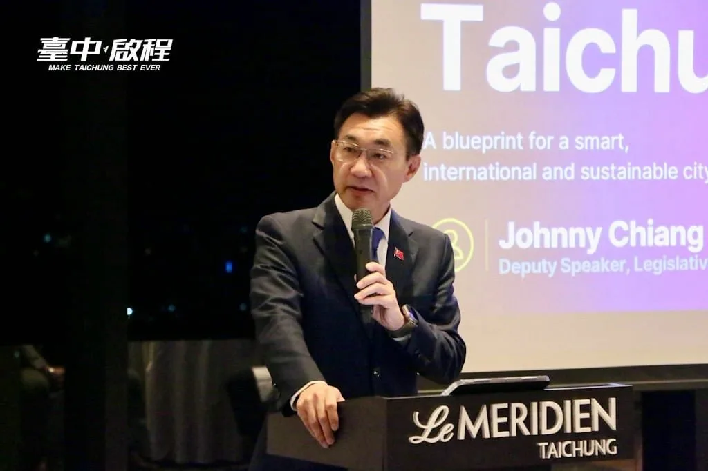

國際油價上漲！持續專案平穩 中油公布8/24-8/30汽、柴油價格維持不調整 〈 國際油價上漲！持續專案平穩 中油公布8/24-8/30汽、柴油價格維持不調整 〉本文來自於《 龍傳媒新聞 iNews Long 》。 台灣中油公司（8／22）日宣布，自下週一(24日)凌晨零時起至8月30日晚上12時止，汽、柴油價格維持...
Posts
國際油價上漲！持續專案平穩 中油公布8/24-8/30汽、柴油價格維持不調整 〈 國際油價上漲！持續專案平穩 中油公布8/24-8/30汽、柴油價格維持不調整 〉本文來自於《 龍傳媒新聞 iNews Long 》。 台灣中油公司（8／22）日宣布，自下週一(24日)凌晨零時起至8月30日晚上12時止，汽、柴油價格維持...

今天早上再次來到龍潭，和鄉親朋友一起為 張贊聞 挺贊的議員候選人加油！我和贊聞同為在地客家子弟，一樣身為孩子的爸爸，一樣關心這片土地，也希望把家鄉跟家人照顧得更好。 所以我已經提出，要增加托育資源，要把敬老愛心卡提高到每月1200點並擴大使用。未來進入市府，在地鄉親關心的龍潭市區舊公所、舊鄉代會的土地，也要重新規劃活化。讓每個世代都能在桃園宜居宜業。 世杰過去擔任立委期間，就關心爭取新梅龍快速道路、板龍快速道路、高原交流道、台66線全線高架化等交通建設。 因為我知道，龍潭進步的腳步不能停下，台積電進駐龍科三期、桃竹苗大矽谷、公車路網與生活機能，都要做得更快更好。人潮進來龍潭後，我們要串聯客庄文化、茶產業、石門水庫等特色，讓觀光發展一起升級！ 感謝張火爐主委、衛福部呂建德次長、龍星里張金財里長，以及到場相挺的每一位市民。 龍潭的發展非常關鍵！未來世杰在市府、贊聞在議會，我們一起加快龍潭發展的速度，讓心龍潭 動起來💖


嘉義人挺自己人！新北、嘉義一起升級！ 非常感謝昨天 #翁章梁 縣長、#蔡易餘 縣長候選人、#陳冠廷 委員特別北上到新北給我支持，更感謝劉德宗理事長、李少桓名譽理事長、張傳為名譽理事長、蔡政廷副理事長、林家瑩副理事長率領各區嘉義同鄉會的幹部和破千名的鄉親一起來相挺巧慧！ 昨天我在現場和大家分享陳澄波先生的兩幅畫作：〈嘉義街景〉、〈濤聲〉，我們特別取得基金會的授權，讓兩幅畫在現場相遇。而這兩幅畫放在一起，其實就是一條從嘉義走到新北的路。 從80多年前的嘉義畫家陳澄波，到今天每一位從嘉義到新北落地深根、打拚生活的嘉義鄉親，因為有一代代團結的嘉義人，才推動了新北這座城市的進步。 我和未來的蔡易餘縣長也在共同討論後提出，我將推動新北和嘉義的 #AI產業 和 #技職人才 的串連和交流，帶動兩座城市的科技產業持續進步，也會在新北舉辦「嘉義日」，把最優質的嘉義農特產品，推薦給更多新北人認識。 最後階段，我們一起繼續衝，帶領新北、嘉義迎接新時代！

@a_chun1973:中秋將至，每一年、每位元首不分黨派都會向庇護工場及弱勢團體採購中秋禮盒，但今年總預算拖到8月底才三讀，又因為立法院表決全數刪凍3000萬元國務機要費，這些中秋禮盒訂單蒙受波及，讓人好急又生氣。 「孩子沒有做錯事」，台中包括十方、立達、瑪利亞等3家被刪單，因為總統府大單預算沒過，加上原物料上漲，營運非常困難。如果有機會的話，我想邀請大刀刪凍預算的委員，能到台中機構親眼看看孩子有多努力！ 一份禮盒，對庇護工場的孩子與弱勢朋友來說，是一份工作、一份收入，每片餅乾、每塊糕餅都靠雙手烘焙、值得尊敬。我們黨團也獻上棉薄之力、媒合企業團體，呼籲企業團體協助採購度難關。 政治人物可以攻防，政黨可以競爭，但庇護工場不應成為政治鬥爭的犧牲品。社會各界集資認購，終究只是補救，而非長遠制度。社會弱勢需要的，是穩定、可預期的支持，合理監督，但請維持住那條有溫度、負有社會責任的公益底線。

@schuanglawyer:一早，我和國漳 @lin.kuo.chang ，分別從桃園、宜蘭趕到台北，來為伯洋 @pumashen 、巧慧 @su.chiaohui 應援💪 網友非常有創意，從「洋流慧聚」，接到氣勢磅礴的下聯「勝利漳杰」。我們都是律師出身，過去在體制內，我們用最嚴謹的法學專業守護人民權利、捍衛民主法治。 現在，我們帶著專業返鄉，將串聯成推動區域合作、強化城市治理的最強連線，用新思維跟新模式，攜手推動交通建設、產業布局、青年住宅，讓市民生活更宜居宜業！ 感謝各位先進們，一起現身相挺。 我們不只有專業，更有改變城市的決心。11/28，一起為家鄉打出最漂亮的勝仗！

一晚兩場，從南區跑到南屯，臺中升級的腳步不能停！💪 今晚感謝羅廷瑋委員、 林霈涵-台中市議員（東區、南區）、 李中愛台中議員、 廖偉翔委員、 林敏霖前議長與劉士州議員接力相挺，也謝謝柳采葳議員從臺北趕來臺中一路從南區挺到南屯。偉翔一句「 #發兩萬、#打皮蛇、 #鞭壞人」，更把現場氣氛炒到最高點！ 從皮蛇疫苗補助、敬老愛心卡當年度不按月歸零，到校園廁所改善、免費公車、捷運加速，以及AI帶動產業升級，啟臣要做的，就是把市民在意的事一件件做好。 接棒盧秀燕，不只延續好政策，更要加速建設、升級臺中。臺中只能前進，不能後退；我們一起守住幸福，讓世界看見臺中！ #臺中升級 #幸福加給 #臺中啟程 #打造旗艦城


🚀高雄正起飛，延續高雄光榮 陳其邁 Chen Chi-Mai市長六年來推動高雄產業轉型，招商引資超過2.7兆元。從台積電帶動半導體S廊帶、亞灣智慧科技聚落，到全台首座亞洲資產管理中心專區落腳，高雄從傳統製造重鎮，走向先進製造、智慧科技與金融服務並進，產業版圖正在改變。 高雄、橋頭及楠梓三大科學園區就業人數，從109年約8,600人增加到114年逾2萬人，成長136.24%；114年高雄失業率3.2%，六都最低；每戶可支配所得平均數與中位數，相較109年分別成長18.49%及14.25%，增幅都是六都第一。 高雄走在對的路上，面對全球競爭，下一步還要更快。 未來，我會延續高雄產業轉型的方向，爭取中央資源、擴大招商，壯大半導體、AI及金融產業，協助傳統產業升級，帶動高雄就業機會增加、市民所得持續成長。 延續高雄光榮，我們繼續向前！


倒數99天！商圈復興與產業轉型的三大願景 看著一些曾經繁華的街道逐漸冷清，許多高雄鄉親都感到可惜。高雄有很大的發展潛力，城市的繁榮也不該只集中在少數地區。要讓商圈重新熱鬧、產業持續升級，就要從空間活化、城市再生與產業轉型三個方向一起推動。 一、舊商圈大復活，讓特色商店進駐點亮老街區 成立「復興高雄經濟媒合平台」，全面盤點舊市區的閒置店面與市場，透過租稅減免與租金補貼，媒合創業者及關鍵商家以合理租金進駐，讓年輕人的創意走進老商圈。 減少閒置空間只是第一步，更重要的是把人潮與商機帶回來，讓一間間閒置店面重新開門，讓一條條街道重新熱鬧起來。 二、車站舊城華麗再生，讓綠廊串聯城市商業機能 高雄車站周邊即將迎來新的發展契機，將引進A級商辦與國際飯店，搭配青年創業獎勵金，打造老店傳承、新創孵化的優質環境。 同時推動舊城再生計畫，以高雄車站為重要樞紐，善用既有的台鐵地下化綠園道，串聯鼓山、鹽埕、三民到鳳山的商業動能。讓都市綠廊不只是休憩空間，更成為串聯生活、商業與觀光的重要廊道，讓人潮沿著綠廊走進城市，也讓繁榮走進每一個巷弄。 三、服務業億元轉型，成為中小企業最強後盾 高雄的服務業也要升級。推動「服務業億元轉型計畫」，投入資源陪伴中小企業進行數位轉型，成立「數位轉型輔導小組」，結合產官學力量，協助企業導入智慧化系統。 加速引進AI、雲端等科技，發展智慧醫療、遠距教育、智慧物流等新型態服務業，創造更多高薪工作機會；鼓勵在地業者異業結盟，打造一站式電商平台，把高雄品牌推向國際。 同時協助企業引進、培訓數位人才，鼓勵學校師生團隊投入創業，成為企業轉型的重要夥伴，從資金、人才到法規提供完整支持，讓民間的創意成為高雄產業升級的最大動能。 高雄的繁榮，要從每一個商圈開始，也要從每一個產業升級。 讓舊商圈重新熱鬧、讓舊城區重新發光、讓中小企業找到新的成長機會，才能讓人潮回來、商機回來、年輕人留下來。

全英文，向世界說臺中！🌏 昨晚受邀出席臺中美國商會晚宴，我全程以英文分享城市願景，也與國際朋友即席問答。從產業、住宅、教育到捷運，大家直接提問，我也直球回應。 我心中的臺中，要智慧，也要有溫度；要接軌國際，也要深耕在地。我也將設置市長直屬「國際合作與發展委員會」，打造單一窗口，讓政府不只宣布政策，更要真正解決問題。 臺中要的不只是投資，更是信任；不只讓人才來，更要讓人才願意留下來！ #臺中升級 #幸福加給 #國際臺中 #TaichungWay

@schuanglawyer:大家早安☀️一早來到力行市場，感謝攤商和鄉親朋友給我親切的問候、熱情的加油打氣，讓原本忙碌的早晨，多一份溫暖，也讓我聽見在地最真實的聲音。 對力行市場周邊來說，由於捷運綠線工期延宕，導致捷運G09站啟用遙遙無期，市府這三年來沒有積極推進，讓工期不斷延宕，也讓深陷交通黑暗期的民眾苦不堪言。 市府應該提前思考，未來捷運啟用後，勢必會改變附近的交通與生活型態，將來環境改善、交通動線、行人環境、大眾運輸接駁及市場整建問題，市府必須做好通盤規劃，和市民朋友做好溝通。 很多在地的好朋友，也跟我反映對垃圾費隨袋徵收政策的憂心，我要再次向大家承諾，在配套措施尚未完善、未充分取得市民共識前，我絕不會貿然推動垃圾費隨袋徵收。 大家的聲音，世杰都放在心上。我會和大家站在一起，為桃園打拚努力，讓我們的家更好！讓心桃園，動起來💖

@schuanglawyer:週末，世杰跑了11個區，和許多市民面對面互動，每一次見面、每一句交流，我都很珍惜。因為我相信，市民真正的需要，就在大家最真實的生活裡。 想讓更多朋友了解我的理念與政見，沒有捷徑，就是多跑一點、多聊一點、多聽一點。為了桃園，拚就對了！ 最近不少鄉親提醒我，「世杰，你的理念很好，但曝光度還要再衝一下，讓更多人看見！」 大家的期待我都聽到了！改變需要凝聚更多力量，世杰誠摯邀請您一起同行，無論是加入志工、提供看板文宣點位，或用小額捐款支持，都是最重要的力量，詳細資訊放置留言區。請大家成為世杰的小蜜蜂，一起把改變的希望，傳遞到桃園的每一個角落。 下一站，期待在你的生活圈相見，讓我們一起把家變得更好❤️

@schuanglawyer:今天早上再次來到龍潭，和鄉親朋友一起為 張贊聞議員候選人 @victory0321 加油！我和贊聞同為在地客家子弟，一樣身為孩子的爸爸，一樣關心這片土地，也希望把家鄉跟家人照顧得更好。 所以我已經提出，要增加托育資源，要把敬老愛心卡提高到每月1200點並擴大使用。未來進入市府，在地鄉親關心的龍潭市區舊公所、舊鄉代會的土地，也要重新規劃活化。讓每個世代都能在桃園宜居宜業。 世杰過去擔任立委期間，就關心爭取新梅龍快速道路、板龍快速道路、高原交流道、台66線全線高架化等交通建設。 因為我知道，龍潭進步的腳步不能停下，台積電進駐龍科三期、桃竹苗大矽谷、公車路網與生活機能，都要做得更快更好。人潮進來龍潭後，我們要串聯客庄文化、茶產業、石門水庫等特色，讓觀光發展一起升級！ 龍潭的發展非常關鍵！未來世杰在市府、贊聞在議會，我們一起加快龍潭發展的速度，讓心龍潭 動起來💖

嘉義人挺自己人！新北、嘉義一起升級！ 非常感謝昨天 翁章梁 Weng Chang-Liang縣長、蔡易餘 家己人縣長候選人、陳冠廷 Kuan-Ting Chen委員特別北上到新北給我支持，更感謝 #劉德宗 理事長、#李少桓 名譽理事長、#張傳為 名譽理事長、#蔡政廷 副理事長、#林家瑩 副理事長 率領各區嘉義同鄉會的幹部和破千名的鄉親一起來相挺巧慧！ 昨天我在現場和大家分享陳澄波先生的兩幅畫作：〈嘉義街景〉、〈濤聲〉，我們特別取得基金會的授權，讓兩幅畫在現場相遇。而這兩幅畫放在一起，其實就是一條從嘉義走到新北的路。 從80多年前的嘉義畫家陳澄波，到今天每一位從嘉義到新北落地深根、打拚生活的嘉義鄉親，因為有一代代團結的嘉義人，才推動了新北這座城市的進步。 我和未來的蔡易餘縣長也在共同討論後提出，我將推動新北和嘉義的 #AI產業 和 #技職人才 的串連和交流，帶動兩座城市的科技產業持續進步，也會在新北舉辦 #嘉義日，把最優質的嘉義農特產品，推薦給更多新北人認識。 最後階段，我們一起繼續衝，帶領新北、嘉義迎接新時代！

想搭熱氣球無需跑到臺東 咱臺中就有～把握活動最後兩天 8/23-8/24一起搭熱氣球、品嚐在地臺中味！ 看著五彩繽紛的熱氣球在山城藍天下緩緩升空，心情真的無比療癒！ 一年一度的「臺中石岡熱氣球嘉年華」在石岡土牛運動公園盛大展開！今年特別請來全球唯一的「臺東天后宮媽祖造型熱氣球」，石岡在地的石忠宮媽祖神尊也親自駐駕並隨球升空祈福，象徵石岡起飛、臺中持續向上發展，保佑大家平安順遂！ 啟臣誠摯邀請大家把握週日與週一活動最後兩天，全家大小一起來石岡體驗熱氣球冉冉升空、感受山城壯麗視野！搭完熱氣球，更別忘了順道暢遊豐原山城，走訪綠空廊道與客庄聚落，大啖在地客家美食、品嚐當季新鮮農產，親身感受最道地、最溫暖的 #臺中味！ #2026臺中石岡熱氣球嘉年華 #石岡起飛 #幸福山城 #臺東天后宮媽祖熱氣球 #臺中啟程 #打造旗艦城

一早，我和林國漳縣長候選人 @lin.kuo.chang ，分別從桃園、宜蘭趕到台北，來為沈伯洋 @pumashen 、蘇巧慧 @su.chiaohui 應援💪 網友非常有創意，從「洋流慧聚」，接到氣勢磅礴的下聯「勝利漳杰」。我們都是律師出身，過去在體制內，我們用最嚴謹的法學專業守護人民權利、捍衛民主法治。 現在，我們帶著專業返鄉，將串聯成推動區域合作、強化城市治理的最強連線，用新思維跟新模式，攜手推動交通建設、產業布局、青年住宅，讓市民生活更宜居宜業！ 感謝各位先進們，一起現身相挺。 我們不只有專業，更有改變城市的決心。11/28，一起為家鄉打出最漂亮的勝仗！

一晚兩場，從南區跑到南屯，臺中升級的腳步不能停！💪 今晚感謝羅廷瑋委員、 林霈涵-台中市議員（東區、南區）、 李中愛台中議員、 廖偉翔委員、 林敏霖前議長與劉士州議員接力相挺，也謝謝柳采葳議員從臺北趕來臺中一路從南區挺到南屯。偉翔一句「 #發兩萬、#打皮蛇、 #鞭壞人」，更把現場氣氛炒到最高點！ 從皮蛇疫苗補助、敬老愛心卡當年度不按月歸零，到校園廁所改善、免費公車、捷運加速，以及AI帶動產業升級，啟臣要做的，就是把市民在意的事一件件做好。 接棒盧秀燕，不只延續好政策，更要加速建設、升級臺中。臺中只能前進，不能後退；我們一起守住幸福，讓世界看見臺中！ #臺中升級 #幸福加給 #臺中啟程 #打造旗艦城
台中週末散策新玩法 何欣純推「欣好店家地圖」 台中市長候選人、立法委員何欣純今（21） […] 〈 台中週末散策新玩法 何欣純推「欣好店家地圖」 〉這篇文章最早發佈於《 何欣純官方網站｜2026 台中市長候選人 》。

倒數99天！商圈復興與產業轉型的三大願景 看著一些曾經繁華的街道逐漸冷清，許多高雄鄉親都感到可惜。高雄有很大的發展潛力，城市的繁榮也不該只集中在少數地區。要讓商圈重新熱鬧、產業持續升級，就要從空間活化、城市再生與產業轉型三個方向一起推動。 一、舊商圈大復活，讓特色商店進駐點亮老街區 成立「復興高雄經濟媒合平台」，全面盤點舊市區的閒置店面與市場，透過租稅減免與租金補貼，媒合創業者及關鍵商家以合理租金進駐，讓年輕人的創意走進老商圈。 減少閒置空間只是第一步，更重要的是把人潮與商機帶回來，讓一間間閒置店面重新開門，讓一條條街道重新熱鬧起來。 二、車站舊城華麗再生，讓綠廊串聯城市商業機能 高雄車站周邊即將迎來新的發展契機，將引進A級商辦與國際飯店，搭配青年創業獎勵金，打造老店傳承、新創孵化的優質環境。 同時推動舊城再生計畫，以高雄車站為重要樞紐，善用既有的台鐵地下化綠園道，串聯鼓山、鹽埕、三民到鳳山的商業動能。讓都市綠廊不只是休憩空間，更成為串聯生活、商業與觀光的重要廊道，讓人潮沿著綠廊走進城市，也讓繁榮走進每一個巷弄。 三、服務業億元轉型，成為中小企業最強後盾 高雄的服務業也要升級。推動「服務業億元轉型計畫」，投入資源陪伴中小企業進行數位轉型，成立「數位轉型輔導小組」，結合產官學力量，協助企業導入智慧化系統。 加速引進AI、雲端等科技，發展智慧醫療、遠距教育、智慧物流等新型態服務業，創造更多高薪工作機會；鼓勵在地業者異業結盟，打造一站式電商平台，把高雄品牌推向國際。 同時協助企業引進、培訓數位人才，鼓勵學校師生團隊投入創業，成為企業轉型的重要夥伴，從資金、人才到法規提供完整支持，讓民間的創意成為高雄產業升級的最大動能。 高雄的繁榮，要從每一個商圈開始，也要從每一個產業升級。 讓舊商圈重新熱鬧、讓舊城區重新發光、讓中小企業找到新的成長機會，才能讓人潮回來、商機回來、年輕人留下來。

全英文，向世界說臺中！🌏 昨晚受邀出席臺中美國商會晚宴，我全程以英文分享城市願景，也與國際朋友即席問答。從產業、住宅、教育到捷運，大家直接提問，我也直球回應。 我心中的臺中，要智慧，也要有溫度；要接軌國際，也要深耕在地。我也將設置市長直屬「國際合作與發展委員會」，打造單一窗口，讓政府不只宣布政策，更要真正解決問題。 臺中要的不只是投資，更是信任；不只讓人才來，更要讓人才願意留下來！ #臺中升級 #幸福加給 #國際臺中 #TaichungWay

大家早安☀️一早來到力行市場，感謝攤商和鄉親朋友給我親切的問候、熱情的加油打氣，讓原本忙碌的早晨，多一份溫暖，也讓我聽見在地最真實的聲音。 對力行市場周邊來說，由於捷運綠線工期延宕，導致捷運G09站啟用遙遙無期，市府這三年來沒有積極推進，讓工期不斷延宕，也讓深陷交通黑暗期的民眾苦不堪言。 市府應該提前思考，未來捷運啟用後，勢必會改變附近的交通與生活型態，將來環境改善、交通動線、行人環境、大眾運輸接駁及市場整建問題，市府必須做好通盤規劃，和市民朋友做好溝通。 很多在地的好朋友，也跟我反映對垃圾費隨袋徵收政策的憂心，我要再次向大家承諾，在配套措施尚未完善、未充分取得市民共識前，我絕不會貿然推動垃圾費隨袋徵收。 感謝李光達議員 @lee_kung_da 、黃家齊議員 @jack790218 、黃瓊慧議員 @qn_taiwan 、李柏瑟議員候選人 @leeposhe_taoyuanmama 、東埔里江慶尚里長、桃園市家畜肉類同業公會黃省祺理事長陪同前行，讓早晨充滿溫暖！ 大家的聲音，世杰都放在心上。我會和大家站在一起，為桃園打拚努力，讓我們的家更好！讓心桃園，動起來💖


對於海佃路爆炸事件的受災戶，目前最關鍵的除了市政府協助集體訴訟代位求償，另外就是需要中央政府協調公股銀行低利貸款協助家園重修經費。 我已向行政院積極爭取，以減輕受災戶的經濟負擔，加快家園重建的速度。 #陳亭妃 #海佃路爆炸 #災後重建 #台南

今天早上再次來到龍潭，和鄉親朋友一起為 張贊聞議員候選人 @victory0321 加油！我和贊聞同為在地客家子弟，一樣身為孩子的爸爸，一樣關心這片土地，也希望把家鄉跟家人照顧得更好。 所以我已經提出，要增加托育資源，要把敬老愛心卡提高到每月1200點並擴大使用。未來進入市府，在地鄉親關心的龍潭市區舊公所、舊鄉代會的土地，也要重新規劃活化。讓每個世代都能在桃園宜居宜業。 世杰過去擔任立委期間，就關心爭取新梅龍快速道路、板龍快速道路、高原交流道、台66線全線高架化等交通建設。 因為我知道，龍潭進步的腳步不能停下，台積電進駐龍科三期、桃竹苗大矽谷、公車路網與生活機能，都要做得更快更好。人潮進來龍潭後，我們要串聯客庄文化、茶產業、石門水庫等特色，讓觀光發展一起升級！ 感謝張火爐主委、衛福部呂建德次長、龍星里張金財里長，以及到場相挺的每一位市民。 龍潭的發展非常關鍵！未來世杰在市府、贊聞在議會，我們一起加快龍潭發展的速度，讓心龍潭 動起來💖

有關安南區海佃路二段空地爆炸情形，今天一早亭妃就幫忙安置地點安排、國軍協助整理家園、電力回覆等等緊急處理事項，明天國軍還會繼續協助家園整理。 目前檢調針對整個案件在調查當中，基於偵查不公開的原則，市長也允諾要協助代位求償，為了讓大家可以重建家園，會先幫忙緊急處理費。 另外社會局還有社會慰助金，亭妃也已經向行政院報告，因為這一次房子受損狀況非常嚴重，若有需要貸款重建，公股銀行應該給予低利幫忙，加快民眾恢復家園重建的速度。 #陳亭妃 #安南區 #火災 #災後重建

想搭熱氣球無需跑到臺東 咱臺中就有～把握活動最後兩天 8/23-8/24一起搭熱氣球、品嚐在地臺中味！ 看著五彩繽紛的熱氣球在山城藍天下緩緩升空，心情真的無比療癒！ 一年一度的「臺中石岡熱氣球嘉年華」在石岡土牛運動公園盛大展開！今年特別請來全球唯一的「臺東天后宮媽祖造型熱氣球」，石岡在地的石忠宮媽祖神尊也親自駐駕並隨球升空祈福，象徵石岡起飛、臺中持續向上發展，保佑大家平安順遂！ 啟臣誠摯邀請大家把握週日與週一活動最後兩天，全家大小一起來石岡體驗熱氣球冉冉升空、感受山城壯麗視野！搭完熱氣球，更別忘了順道暢遊豐原山城，走訪綠空廊道與客庄聚落，大啖在地客家美食、品嚐當季新鮮農產，親身感受最道地、最溫暖的 #臺中味！ #2026臺中石岡熱氣球嘉年華 #石岡起飛 #幸福山城 #臺東天后宮媽祖熱氣球 #臺中啟程 #打造旗艦城


到立法院說個玩笑，這五個月跑遍新北 29 區，最大的收穫是瘦了五公斤。 說實在，到立法院，是想再讓另一個東西瘦一點。 不是我，是法條。 做工程的人最清楚，一個案子動不了，卡的常常不是工地。不是錢還沒到，就是法還沒改。 軌道要動，等的是中央的預算。都更要動，等的是那幾條該修沒修的老法規。 那，這兩件事光靠地方政府自己還不夠，還要立法院點頭。 所以昨天到國民黨團、民眾黨團坐下來談。軌道建設 123、樹林鐵路地下化，還有都更 5 夠力，一項一項報告，一項一項拜託。 有委員跟我說，他的選區跟新北接壤，希望以後合作多一點。生活圈本來就是連在一起的，行政區的線是畫給公文看的，不是畫給通勤的人看的。 新北 400 多萬人等的，不只是一張漂亮的路網圖。是那一段路，什麼時候可以真的動工。 五個月瘦五公斤。下一個要瘦的，是法條。


【無人載具採購】混淆特別條例與產發條例？陳亭妃怒批在野：根本違憲又倒退嚕！

傳承硬頸精神，打造高雄客家文化城！ 太家好（tai ga´ ho`）！承蒙大家！恁仔細！ 非常感謝黃仁杼總會長、邱建國總會長和台客盟的夥伴們，正式成立「台客盟高雄後援總會」，成為支持我向前走的重要力量！高雄擁有超過40萬客家人口，這份踏實勤奮的硬頸精神，一直都是推動城市前進的重要力量。 從2017年推動《客家基本法》修法、將客語列為國家語言，到促成客家公共傳播基金會成立，我始終和客家族群並肩同行。未來我將全力打造「高雄客家文化城」，推動三大核心目標： 1️⃣ 推動客語復興和傳承 首重客語保存，擴大校園和社區沉浸式教學，增加學習資源和師資，並推廣客語友善商家認證，讓客語真正融入日常生活。 2️⃣ 保存創新客家文化及培育後生人才 結合數位科技保存客家文資、口述歷史，以創新文化內容推廣客家文化；同時推動人才培育計畫，支持客家後生返鄉、留鄉發展。 3️⃣ 整合客庄產業聚落及建立高雄客家品牌 強化「右堆文化路徑」，串聯美濃的傳統工藝和美食，結合六龜、杉林、甲仙各區特色，打造具國際能見度的客庄觀光廊帶；在都會區也會辦理主題文化節慶，展現客家多元風貌。 每一種樸實無華的堅持背後，都藏著對家園最深的疼惜。客家朋友的硬頸精神，正是撐起高雄的重要力量。無論是在田頭田尾守護農產，還是在都會區的百工百業中扎根，大家始終展現堅韌的生命力。 萬事起頭難（van sii hiˋ teuˇ nanˇ）。在歷任市長一棒接一棒的努力下，高雄變美了、變好了。身為客家女婿，我會帶著大家的認同和支持，用伯公守護家園的決心，帶領高雄邁入下一個黃金十年。請大家繼續和我作伙，攜手拚出更繁榮、更幸福的永續高雄！ 高雄小金剛許智傑李昆澤何權峰 高雄市議員邱俊憲 高雄市議員陳慧文 高雄市議員湯詠瑜 詠瑜新選擇林智鴻 高雄市議員江瑞鴻 高雄市議員張漢忠 高雄市議員林慧欣尹立 左營楠梓市議員參選人蘇致榮 鳳山阿榮登真-邱議瑩服務團隊 黃敬雅 Huang Ching-Ya-Ya服務團隊

Honored to address AmCham Taichung and share my vision for a smart, welcoming, and globally connected city. Will establish one-stop council to address real-world challenges, build trust, and attract and retain global talent. Together, we connecting Taichung to the world! 🇹🇼
台積電在南科，台南人都賺爆了！？ 我敢跟你說，絕對沒有！ 南科2024年產值正式超越竹科，台積電擴建三座2奈米廠，是世界最重要的供應鏈。 但南科旁邊的鄉鎮，5年來房價漲、生活費漲，本地薪水漲幅卻很有限。 為什麼？因為《財政收支劃分法》規定所得稅90%給中央、只有10%給地方，南科賺進2.97兆，台南實際拿到的稅少得可憐。這20年地方經濟結構早已翻天覆地，半導體、AI、綠能、生技都在地方，但錢卻都往中央流。 很多國家都在推動「賺GDP的城市分到合理稅收」的制度改革，我們的財政劃分也應該跟上時代。南科在地應該要有紅利基金，從相關稅收專款專用於教育、住宅、托育、長照。 一樣是那句老話，我們再努力拚拚看吧！ #南科 #台積電 #財政收支劃分法 #陳亭妃


給專家舞台，台北才能站上世界的舞台。 來到六師聯誼會，我看見六種不同領域的專業，卻有一個共同的核心：讓社會運作得更順暢。 醫師守護一座城市的健康、會計師奠定誠信經濟、建築師構築城市藍圖、律師守住法治的基礎。不同的專業，各自在自己的位置上，支撐一座城市每天的運轉。 而市府的責任，不是什麼都自己決定，而是讓最懂的人參與決定。 過去的城市治理，常常是政策做了，才找專業來解決問題。但真正好的治理，應該反過來：讓專業從一開始就進入決策，讓第一線的經驗成為政策的一部分。 真正好的市長，不需要每一件事都比別人懂，而是知道誰最懂，讓專業的人有位置、讓專業的判斷被尊重。 這也是為什麼，我提出成立「#台北研究院」。 台北需要一個屬於自己的城市級研究機構，集結不同領域的專業人才，持續研究台北的長期問題、提出城市發展策略，也直接和世界各大城市、研究機構建立連結。 市長有任期，但城市的規劃不能只有四年。 感謝各行各業的專家，一起運轉這座城市。也感謝醫師公會全聯會陳相國理事長、中醫師公會全聯會蘇守毅理事長、牙醫師公會全聯會陳世岳理事長、會計師公會全聯會張威珍理事長、全國建築師公會崔懋森理事長、全國律師聯合會李玲玲理事長，以及全體理監事。 未來，我會讓市府成為一個真正的跨專業平台，讓第一線的經驗進得了市府、專業的意見進得了決策。 讓專業有舞台，讓台北站上世界的舞台。 #台北順起來 #你的市長沈伯洋